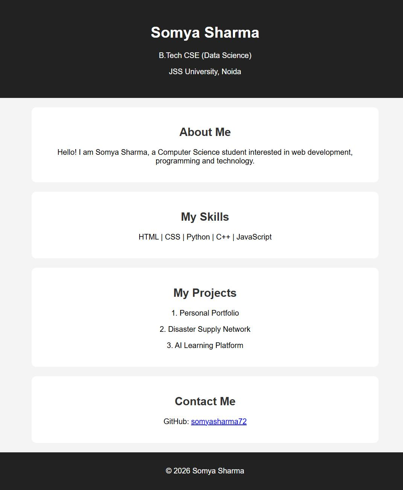
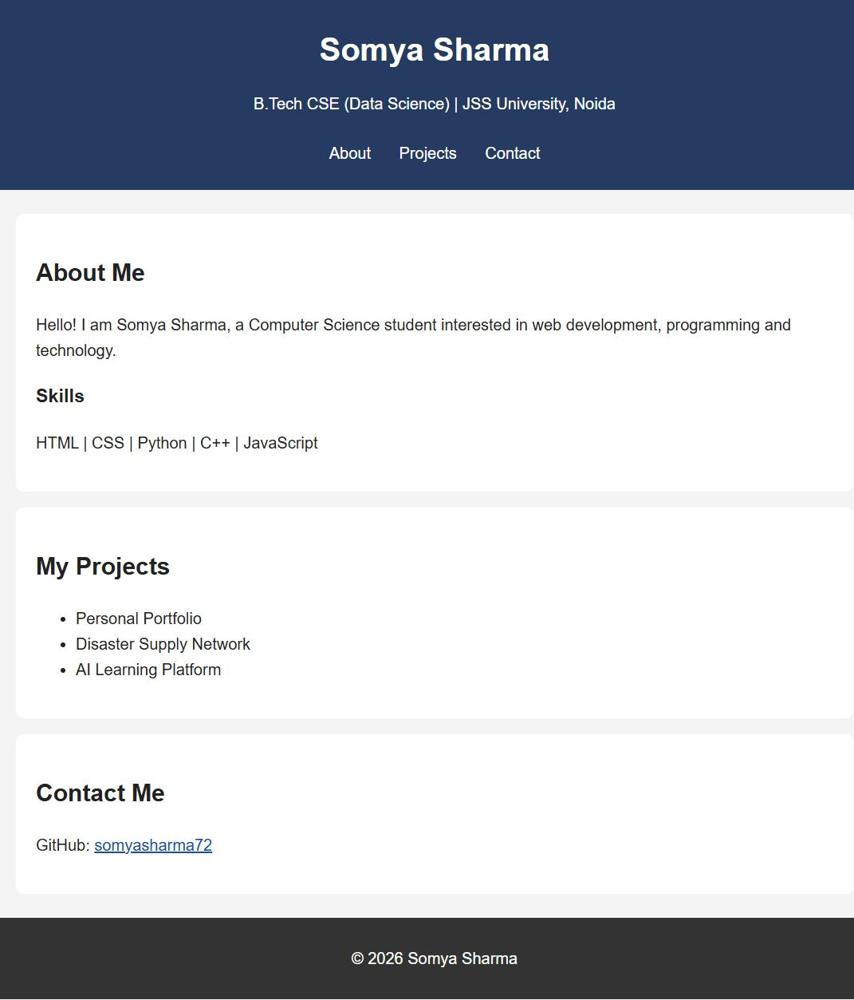
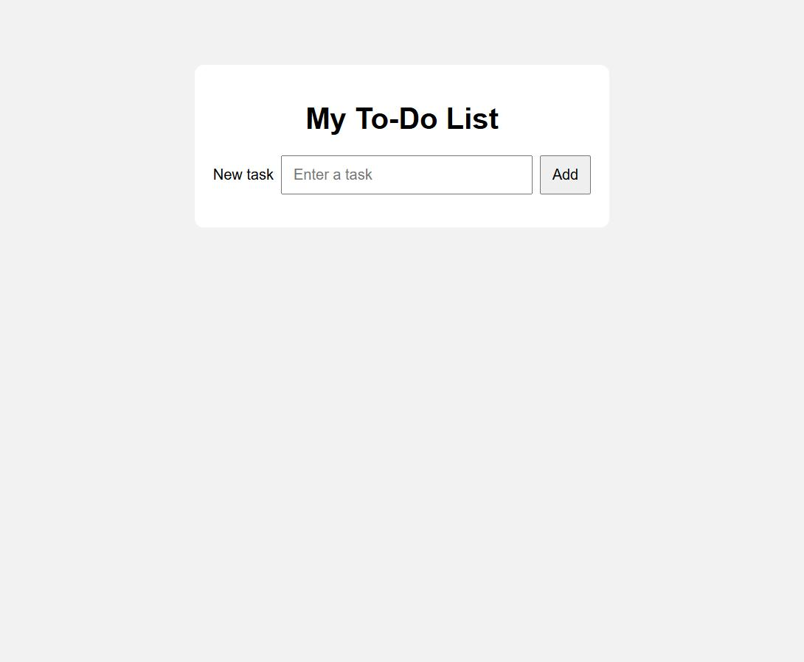
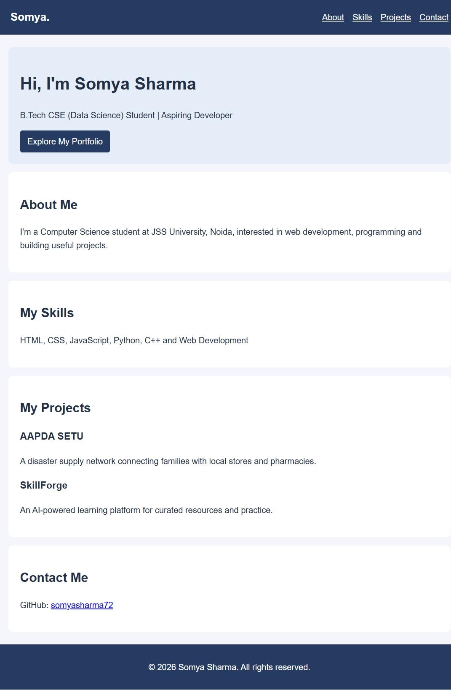
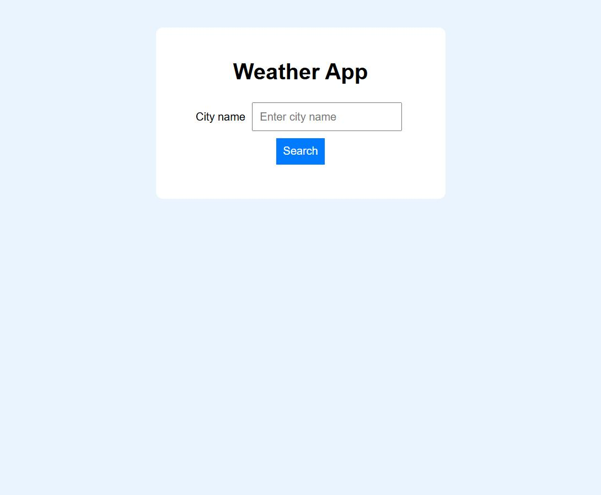
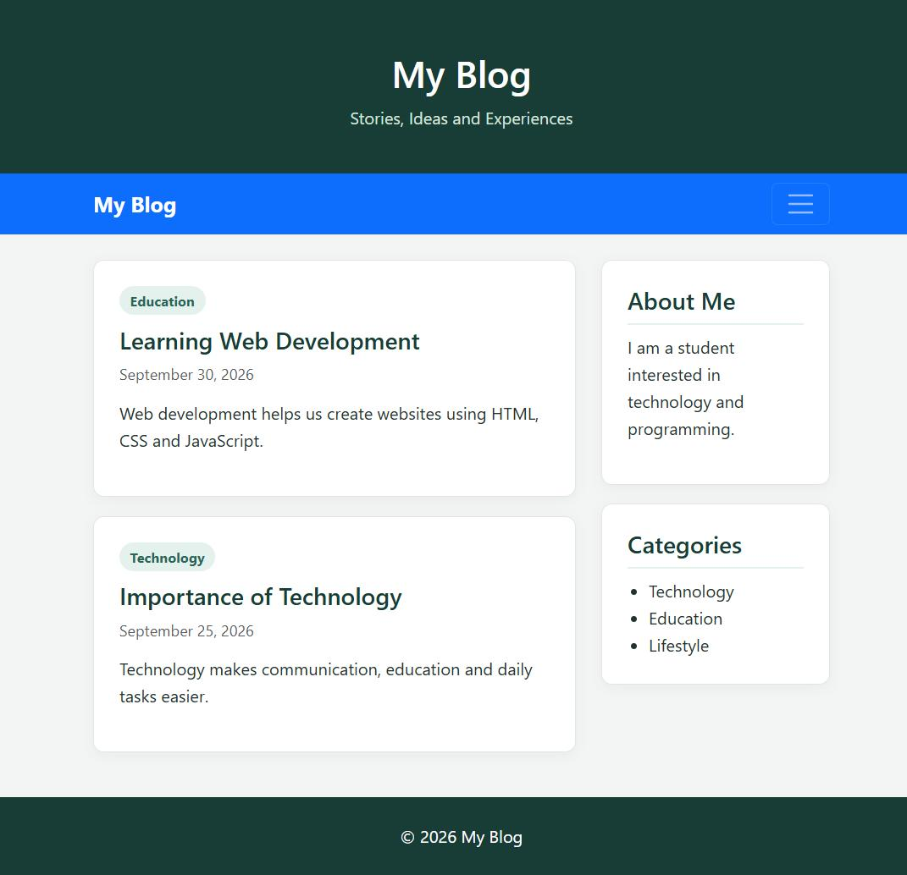

Department of Data Science | Web Development Lab
Experiment 01 of 06
Personal Profile & GitHub Pages
Profile page with notes for repository setup, branching, merging, and static-site hosting.
Published page: somyasharma72.github.io/college_experiments/experiment1/

Objective and page contents
Present the student's profile, skills, projects, and contact details. The experiment also explains how GitHub stores the project and how GitHub Pages can publish it.
Resources: HTML, CSS, VS Code, Git, GitHub, a web browser, and GitHub Pages.
Project structure
experiment1/
└── index.html
Capture: deployed page returned HTTP 200 on 9 Oct 2026.
Git tasks to perform manually
- Create a GitHub repository, connect this folder, commit the files, and push the default branch.
- Create and push a feature branch; make and commit a change.
- Open a pull request, review it, and merge it into the default branch.
- Configure Settings > Pages to publish the default branch's root folder; wait for the build and check its URL.
Not claimed as completed: repository creation, branch work, merge, and deployment actions must be performed and verified by the student.
Department of Data Science | Web Development Lab
Experiment 02 of 06
Personal Portfolio
A responsive student portfolio with section navigation, About, Projects, and Contact.
Published page: somyasharma72.github.io/college_experiments/portfolio/

Objective and page contents
Introduce the student, show a small skills list and project list, and provide navigation links to the page sections.
Resources: HTML5 and a linked CSS stylesheet.
Project structure
portfolio/
├── index.html
└── style.css
Capture: deployed page returned HTTP 200 on 9 Oct 2026.
Implementation excerpt
<nav aria-label="Main navigation">
<a href="#about">About</a>
<a href="#projects">Projects</a>
<a href="#contact">Contact</a>
</nav>
<main>
<section id="about">...</section>
<section id="projects">...</section>
<section id="contact">...</section>
</main>
The navigation targets the matching section IDs. The stylesheet provides a centered layout and a small-screen spacing adjustment.
Department of Data Science | Web Development Lab
Experiment 03 of 06
To-Do List
A small browser-based task list for adding, completing, and deleting tasks.
Published page: somyasharma72.github.io/college_experiments/to-do%20list/

Objective and page contents
Accept a task, append it to a list, toggle its completed state, and remove it when no longer needed. Empty task text is ignored.
Resources: HTML, CSS, and browser JavaScript.
Project structure
to-do list/
└── index.html
(styles and script are inline)
Capture: deployed page returned HTTP 200 on 9 Oct 2026.
Implementation excerpt
taskForm.addEventListener("submit", function (event) {
event.preventDefault();
const task = taskInput.value.trim();
if (!task) return;
// Create task text, Complete/Undo and Delete buttons.
taskList.appendChild(item);
});
Task text is inserted with textContent; the action buttons work with keyboard and mouse.
Department of Data Science | Web Development Lab
Experiment 04 of 06
SEO & Accessibility
Portfolio page improvements for search metadata, semantic structure, keyboard access, and mobile layouts.
Published page: somyasharma72.github.io/college_experiments/seo%20experiment/

Checks and improvements
- English document language, descriptive title and meta description.
- Header, labeled navigation, main content, sections, and footer.
- Heading order, valid section links, and visible keyboard focus.
- Responsive CSS and reduced-motion preference support.
- No images or form inputs are used on this page.
Project structure
seo experiment/
├── index.html
└── style.css
Resources: HTML5 and CSS3. Deployed page returned HTTP 200 on 9 Oct 2026.
Implementation excerpt
<meta name="description"
content="Somya Sharma is a B.Tech Computer Science student...">
<header>...<nav aria-label="Main navigation">...</nav></header>
<main id="top">
<section id="about">...</section>
</main>
The canonical URL was intentionally removed because the original pointed to example.com.
Department of Data Science | Web Development Lab
Experiment 05 of 06
Weather Application
City search uses Open-Meteo geocoding followed by its forecast API to show current conditions.
Published page: somyasharma72.github.io/college_experiments/weather/

Objective and behavior
Search by city name, show a loading message, handle unknown cities and API/network errors, and display temperature, humidity, and wind speed when data is returned.
Resources: HTML, CSS, JavaScript Fetch API, and Open-Meteo public endpoints.
Project structure
weather/
└── index.html
(styles and script are inline)
Capture: deployed page returned HTTP 200 on 9 Oct 2026.
Implementation excerpt
const geoResponse = await fetch(geocodingUrl);
if (!geoResponse.ok) throw new Error("City search failed");
const place = geoData.results[0];
const weatherResponse = await fetch(forecastUrl);
if (!weatherResponse.ok) throw new Error("Weather request failed");
City names are URL-encoded. Results are inserted as text, and a live status region announces loading and errors.
Department of Data Science | Web Development Lab
Experiment 06 of 06
Bootstrap Blog
Responsive blog layout using Bootstrap's grid and navbar with post cards, a sidebar, and a footer.
Published page: somyasharma72.github.io/college_experiments/bootstrap_exp6/

Objective and page contents
Present two blog posts in the main column, an About and Categories sidebar, and a footer. The navigation collapses behind a toggle on smaller screens.
Resources: HTML5, Bootstrap 5.3.3 CSS and bundle, and a small custom stylesheet.
Project structure
bootstrap_exp6/
└── index.html
(Bootstrap loaded from jsDelivr)
Capture: deployed page returned HTTP 200 on 9 Oct 2026.
Implementation excerpt
<nav class="navbar navbar-expand-lg navbar-dark">
<button class="navbar-toggler"
data-bs-toggle="collapse"
data-bs-target="#blogNavigation">...</button>
...
</nav>
<main class="container">
<div class="row">...</div>
</main>
Bootstrap's responsive grid stacks the post column and sidebar on narrow screens.